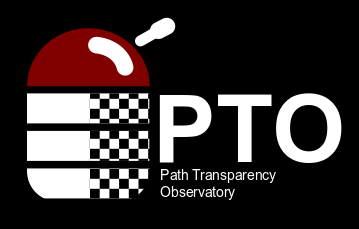

An open-source, public repository for measurement of path transparency and
impairments on new and existing network protocols in the Internet.
You can use the query web-frontend to query our observation database and get graphical rendering of the results!
We also provide a Path Transparency Observatory API (PAPI) to run custom queries on the observation data base of the PTO based on a custom-tailored query language, called Interesting Query Language (IQL). PAPI offers additional functionality enabling more complex queries than provided by our web-frontend. Some API methods are not public and require an API key. To receive an API key please contact us.